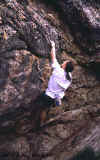
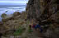

| Gold Coast Bouldering Guide |
By Neil Monteith
and Lee Skidmore, November 1999
Last updated 19 April, 2002
|
|

|
None of these areas would be places you'd go specifically to go
bouldering, but if you've been roped (!) into a trip to the coast, they may
provide a diversion.
Fingal
The area is situated halfway along Fingal Head on Fingal Road which starts off the Pacific Highway on the New South Wales side of the border. This small sea cliff consists of black volcanic rock with good friction. It has some great boulder problems, short easy solos and some roped routes. The eastern headland consists of cracked columns whilst the southern wall consists of a juggy face.
Point Danger
What you're interested in here is the rocky headland below Point Danger Road at Coolangatta. The south-facing walls consist of smooth, but
unfortunately discontinuous basalt that can be wet in places. As you follow it around to the seaward side, the rock becomes super-bubbly volcanic basalt with superb friction, but again, quite discontinuous. Perhaps not too bad for an hour or two of fun. Mind the landings!
|
Burleigh Heads
This is a short cracked wall below the lookout in Burleigh Heads National Park.
It's not any good for bouldering, but has some roped routes. Check out the
climbing guide.
Currumbin
The pyramid of rock out on the headland of Currumbin is only something you'd play on if you were swimming around the area. The rock quality is less than perfect, but sufficient. There are some overhanging, pockety traverses. The landings are flat, but often wet. |
 |
|
Above: Neil Monteith bouldering
South Nobby Point
|
|
South Nobby Point
This area has some superb pocketed bouldering up sharp, overhung quartz rock. Many problems climb roofs and overhangs and are usually very pumpy. The best wall is situated behind the boulders on the northern side of the headland. Dynos and power moves are easily found here.
Park on the southern end of Marine Parade in Miami and walk south along the beach to reach this area. |
 |
|
Above: Simon Hennig cranking at
South Nobby Point
|

|
{kind=link}
{kind=link}